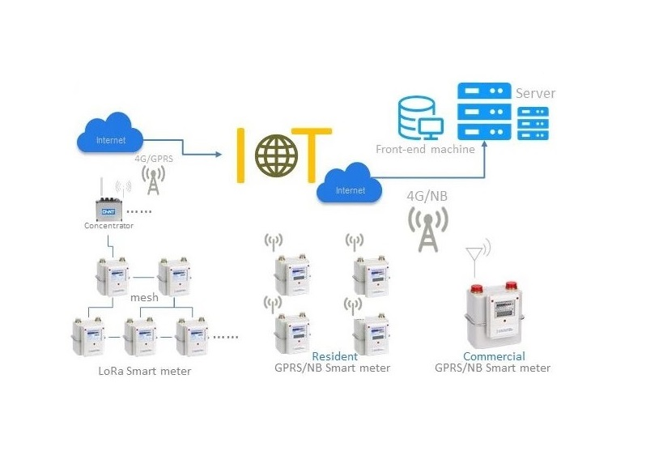

Red de Medidores Eléctricos Inteligentes
Sistema de medición y monitoreo eléctrico en tiempo real mediante concentradores de datos.
Configuración de la red:
1
Instalación del concentrador - Colocar el dispositivo central en ubicación
estratégica con cobertura WiFi/4G
2
Emparejamiento de medidores - Cada medidor se vincula al concentrador
mediante protocolo LoRaWAN
3
Configuración de red - Establecer topología en malla para redundancia y
mejor cobertura
4
Integración con plataforma - Los datos se envían a la nube para
visualización y análisis
LoRaWAN
IoT Cloud
Topología Malla

Sistema de Medición de Gas Integrado
Monitoreo remoto de consumo de gas con sensores ultrasónicos de alta precisión.
Implementación:
1
Instalación de medidores - Dispositivos con sensor de flujo y comunicación
inalámbrica
2
Conexión a gateway - Enlace mediante protocolo Wireless M-Bus (868MHz)
3
Configuración de intervalos - Programación de frecuencia de medición y
envío de datos
4
Detección de anomalías - Alertas automáticas por fugas o consumos inusuales
Wireless M-Bus
Detección de Fugas
Baja Consumo

Red de Medición de Agua Inteligente
Sistema de telemetría para monitoreo de consumo y detección de pérdidas en redes hídricas.
Implementación:
1
Instalación de sensores - Medidores con tecnología de pulso magnético para
máxima precisión
2
Conexión a red - Comunicación mediante NB-IoT para amplia cobertura
3
Calibración - Ajuste de sensores según diámetro de tubería y rango de flujo
4
Monitoreo avanzado - Detección de patrones de consumo y posibles fugas
NB-IoT
Detección de Fugas
Análisis de Consumo